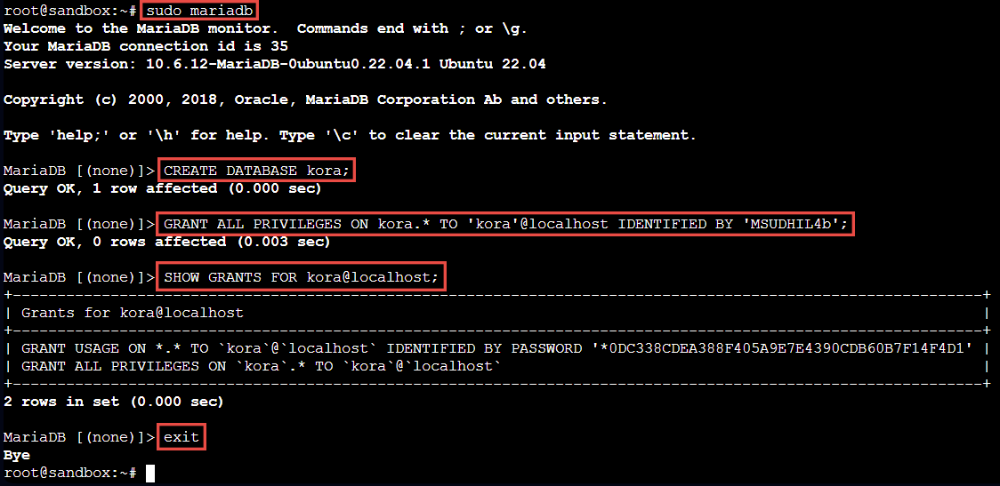
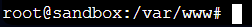
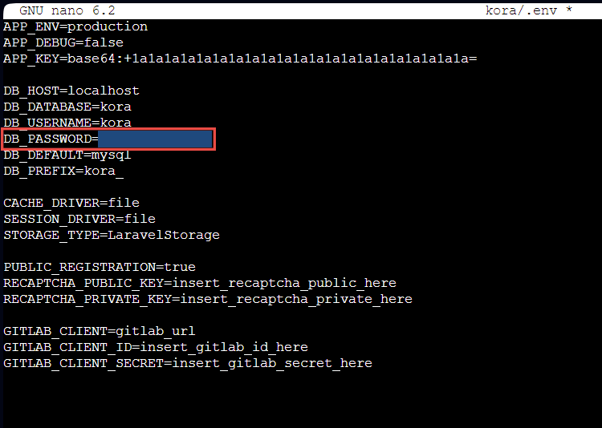
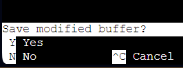
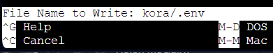
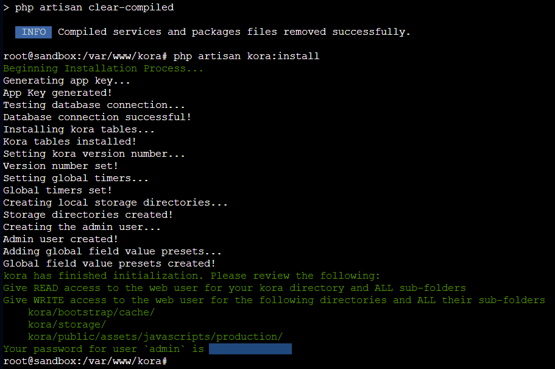
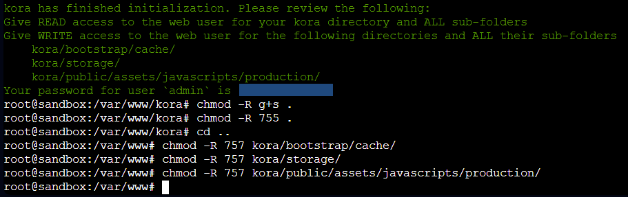
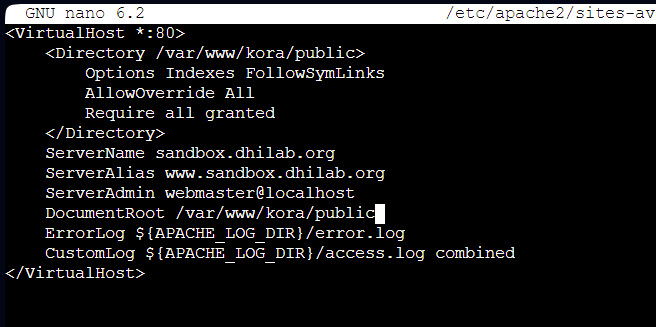
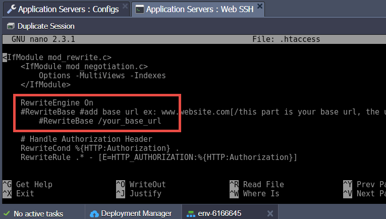

Installing Kora on a LAMP Stack
This guide is for installing Kora in a server environment set up with a LAMP stack. For this guide, the example environment is a DigitalOcean droplet, set up with Linux (Ubuntu v22.04 (LTS)), Apache2 (v2.4.52), MySQL (MariaDB v10.6.16), and PHP (v8.1.8). For Kora's minimum server requirements, please check our System Requirements page.
Set up Acceptable LAMP Stack
This guide presumes you have already set up a basic LAMP stack with the minimum system requirements. One way to set up such an environment is to rely on DigitalOcean droplets, which are scalable virtual servers. Though the minimum requirements for Kora require only 1GB of storage available, the server environment should be a bit larger than this to accommodate all the requisite programs and libraries. As such, this guide was written while using a DigitalOcean droplet with Ubuntu OS (in this case, 22.04 (LTS)) installed, the "Regular" disk type option selected, and the tier that includes 1GB RAM, 1 CPU, 25GB of disk storage, and 1000GB Data Transfer. In January 2024, this tier costs $6 per month. It also uses an SSH key for authentication.
DigitalOcean has a number of thorough, well-written guides, including "Initial Server Setup", which is kept updated as new OSes are supported for droplet initialization. It includes guides for other OSes than Ubuntu as well, including versions of CentOS and Debian. This guide will go through different settings for server security, including setting up a non-root admin account and enabling the firewall. After this guide, you might find the guide "How To Install Linux, Apache, MySQL, PHP (LAMP) Stack" useful, which is also kept updated for multiple OSes. It will walk through setting up the rest of a server LAMP stack (the "L" having already been set up, since a droplet initializes with Linux installed).
Note
This guide uses MariaDB in the screenshots related to setting up a MySQL database and user. MariaDB is essentially an open source fork of MySQL and either will work with Kora. For the purposes of this guide, they are interchangeable: any command that is written with mysql could have that substituted with mariadb (as is the case in the related screenshots). DigitalOcean's guides walk users through setting up MySQL, but if you want to use MariaDB instead, just sub in mariadb every time the guide directs you to write mysql.
Install important applications and packages, in preparation of installing kora
-
Connect to your server environment via a terminal, in whichever way is your preference, with an admin-enabled user. This guide's screenshots depict a connection using root, however this is not advised and in some cases may induce warnings from the terminal about certain actions. If you are using a DigitalOcean droplet and you followed the initial setup guide linked above, you can use the browser-based terminal that is accessible via the droplet's "Access" tab. Switch to the account you created when following that guide.
-
Update your available packages, by running the following command:
sudo apt update -
Run a command to install all the required packages for Kora to successfully install and run. In different server environments, many (or even all) of these may already be installed, but this does not matter because the install process will simply update any that are out of date and ignore all that do not require installing or updating. Run:
sudo apt install composer git php-bcmath php-tokenizer php-common php-mysql php-xml php-xmlrpc php-curl php-gd php-imagick php-cli php-dev php-imap php-mbstring php-opcache php-soap php-zip php-intl -
Next, run the command to ensure the Apache2 mod_rewrite module is enabled. Use:
sudo a2enmod rewrite -
Terminal may return a line indicating that the module is already enabled, or it may indicate that the module was successfully enabled. In either case (just to be sure) restart Apache:
sudo systemctl restart apache2
Set up the MySQL Database and Users
-
Enter MySQL:
sudo mysql -
Create the required database:
CREATE DATABASE kora;The semi-colon in this command is really important, but if you forget it on this line, the terminal will extend the command to a new line, where you can then type the semi-colon and press enter to run the command.
-
Create user, with strong password, and grant all privileges to it for the new database:
GRANT ALL PRIVILEGES ON kora.* TO 'kora'@localhost IDENTIFIED BY '{strong-password}';Again, remember the semi-colon. Use a strong no-spaces password in place of
{strong-password}(leaving the single quotes in place).IMPORTANT
Write down the password you use, because you will need it for setting up Kora later on.
-
Check that the user has privileges for the database:
SHOW GRANTS FOR kora@localhost;The password displayed will be a hashed password, rather than the plain text one you provided. This is to keep the password secured; if someone wants to crack the password, they will have to brute force it from the hash. Even though this is much more secure, it is still a really good idea to not share even this hashed password (hence why it is blocked out here).
-
Exit MySQL:
exit; -
After this session is completed, your terminal will return to the server prompt and your window might look like the below image. The outlined portions highlight each of the commands used above.

Import Kora Files
Kora's files are hosted as a repository (repo) on GitHub. This guide relies on tools for directing your server to reach out to the GitHub URL and download the repo straight to the server. If you prefer to use another way to grab the GitHub repo and upload it to your server, feel free to do so. Make sure the files end up located in the same place as where this guide describes.
-
In your Terminal, change your prompt directory to the one which contains your server's directory that is set up as the one accessible via your server's IP address or URL. In the case of a default DigitalOcean droplet, the publicly-accessible directory is
/var/www/html, so in this case the prompt should be moved to the directory/var/www. Thus, from the default prompt location after connecting, use:cd /var/wwwYou can tell the directory your prompt is in by looking at the part to the left of the number symbol (aka pound sign, or hashtag). As you can see in the screenshot below, the code to the left of this symbol specifies the user (in the screenshot here, "root@sandbox") and then the prompt location ("/var/www").

-
Use
gitto clone the Kora repo to your server environment:sudo git clone https://github.com/matrix-msu/kora -
Check the newly-created directory name by using the
lscommand.lsis the list command; the-lflag used here is for listing contents in long-form:ls -lIn a default droplet, this will show "html" and then the newly-created directory containing the kora files. It might already be named "kora"; however, it might also have imported with some other name (especially if you are instead importing a fork of Kora from a different GitHub account, which has been renamed). If the name is not "kora", move the directory (which is how Linux handles renaming) so that it is named "kora".
sudo mv {directory-name} kora(Replace
{directory-name}in the command with the actual current name for the directory)If you would like to confirm that the directory has been properly renamed, you can again run
ls -l.
Prepare Kora Files for Installation
Kora is packaged with two configuration files that must be set up prior to installation: the ".env" file in the main directory and the ".htaccess" file in the "public" subdirectory. Both of these come as example files that need to be copied and renamed. The ".env" file also requires editing in all Kora installations.
-
Move your prompt location to the "kora" directory. If your current location is
/var/www, then you will use this command:cd koraIf instead moving to "kora" from the droplet's default initial prompt location (the server root), use:
cd /var/www/kora -
Once your prompt is in the "kora" directory, use this command to copy the ".env.example" file to the new name ".env":
sudo cp .env.example .env -
Use a Terminal text editor to edit the new ".env" file. Popular editors include
nanoandvim; this guide usesvim:sudo nano .env -
This will load your terminal window with the .env file, which will look like the following screenshot:

As long as you used the default values for setting up your MySQL database and username (which were suggested in the section above), then the only value you will need to edit in this file is
DB_USERNAME. You'll change it to{strong-password}, which you used in the MySQL database setup. You can use your arrow keys to move the cursor to the correct spot in the file. (The relevant line is also highlighted in the above screenshot.) -
Now exit and save the file. For
nano, you will exit by holding "ctrl" and hitting "x". -
The bottom of the displayed file will change to ask if you would like to save:

-
Press "y" then "Enter" to agree to save. The bottom will again change, to ask after the file name:

-
Leave the defaulted name alone and simply hit "Enter".
-
Your Terminal will then return to the server prompt. From there, create a copy of the other required file by again using cp:
sudo cp public/.htaccess.example public/.htaccessNote
If your Kora install is for a domain-level or subdomain-level URL (e.g. https://example.com or https://kora.example.com), then there is nothing you need to edit in the .htaccess file inside of "public". For installations that are accessible at a URL subdirectory (e.g. https://example.com/kora), follow the section below for editing this .htaccess file and then creating the necessary link to your URL's directory.
-
Kora uses a program called Composer for managing some of its required files for installation, which itself relies on a file within this "kora" directory for configuration. This file will need to be updated before Kora will install correctly, so run the following command to update this Composer file:
composer updateNote
If you set up your server such that you've been doing everything under the root user, you will get a warning message about using composer with root. Using root for all of this setup is not recommended and you do so at your own risk. If you want to proceed without redoing your server setup to add a non-root admin user, then type "y" and press "Enter".
Once Composer finishes its update procedure, your files should now be entirely prepared for the Kora installation.
Running the Installation Command
-
Once the files are prepared, again ensure your Terminal prompt is in
/var/www/koraand then run the installation command:php artisan kora:installOnce successful, your Terminal window will look similar to this, with the successful installation message (in green, with the password blocked out):

Note
If the installation fails and provides a message that says (in part) "Failed to connect to database! Check your database credentials or review the logs for more error information," this may be due to some common problems and there are a few things to check before trying to run the installation command again. First, check mysql (or mariadb) to confirm the name of the database (
SHOW databases;) and user (SELECT User FROM mysql.user;) you created. Then re-open the .env file where you earlier put the database password to double-check that the database and user names match the ones you just confirmed and that the password in this file matches the one you wrote down when you created it. If everything matches, the issue may be something else. You can check for any similar issues and potential solutions in Kora's GitHub Issues, or open your own Issue with a detailed description of the problem. -
INCREDIBLY IMPORTANT: You must copy the last line generated here in the successful installation message (shown in the screenshot above), which has your password for the generated username of "admin". To copy things in a browser-based Terminal (such as the one provided by DigitalOcean), first use your mouse to select the line, then right-click and select "Copy." Paste this somewhere safe, where you will not lose it!
Warning
It cannot be stressed enough how important this step is, because losing this password means losing access to your installation and will require a full reinstallation.
-
Notice that, in the successful installation message, you are directed to "give READ access to the web user," as well as "WRITE access" for specific directories, to ensure that Kora continues functioning properly after users start contributing. To ensure the READ and WRITE permissions persist, you can use the following command to set it so that created files and directories in "kora" will retain the current GROUP setting:
chmod -R g+s .chmodstands for "change mode," which is how the server's operating system refers to changing permissions. The-Rflag tells the command to run recursively, i.e. change them for this directory and everything it contains.g+ssets the permissions for files that EXECUTE in the directory as the group owner (rather than the user). And finally, the.is the short-hand for "current directory".When successful, Terminal will just re-display the command prompt without a message.
-
Next, it is important to confirm that the directories and files in this installation are all set to the
755permissions level. In Linux, this number represents the permissions levels for three different attributes related to a file or directory's ownership in the system. The first number represents the level set for "Owner," the second for "Group," and the third for "Other/World" (sometimes also called "User"). Setting7is full access — aka read, write, and execute — whereas setting5is read and execute access only. For the purposes of this basic installation, the level for "Owner" should always be set to7so that you will always be able to make changes to things if needed. However the amount of access given to "Group" and "Other/World" attributes will affect the security of your server environment, so it is important to set these to5or some other non-write setting whenever possible.So, to confirm that the installation's permissions are set at the appropriate levels for the appropriate attributes, run this command to set all of this directory and its contents to "READ" (and execute, which is missing from the successful installation message). Again, in many cases it isn't strictly needed, but in the few where it is, this will ensure the settings are set correctly (do not forget the period):
chmod -R 755 .And just as before, when successful, it will just re-display the command prompt without a message.
Set WRITE and EXECUTE Permissions On Certain Directories
The green Success message for a Kora installation tells you to ensure that certain subdirectories have WRITE permissions for web users. The specified directories are from the perspective of the directory that contains Kora, rather than from inside the "kora" directory, so first move your Terminal prompt to this higher directory.
-
To move the prompt upward from
/var/www/korato/var/www, use:cd .. -
Run the following three commands, using the exact locations described in the successful installation message (the screenshot is reproduced below). These will set the "Write" (and "Execute") permissions for "Group" correctly. Hit "Enter" after each command (i.e. run each on its own).
chmod -R 757 kora/bootstrap/cache/chmod -R 757 kora/storage/chmod -R 757 kora/public/assets/javascripts/production/When successful, each of these will just re-display the command prompt without a message (as was the case with the
chmodcommands before). After you've run all three, your Terminal will look something like this:
Once these persmissions have been set, your Kora installation is complete! However, there are a few more server settings that need to be adjusted before your Kora installation will be accessible via your URL.
Virtual Host Configuration (for a Domain or Subdomain URL Installation)
During your server setup, you likely created a virtual host configuration file (a .conf file). Now that your Kora installation is complete, this .conf file needs to be adjusted to accommodate Kora.
Note
This part of the guide also assumes you have not yet set up an SSL certificate for your Kora-specific domain or subdomain (this does not apply to subdirectory URL installation, which is instead explained in a different section of this guide, below). If you have already set up an SSL certificate, your Virtual Host file might instead be something other than the one you initially set up when creating your server, because the process of setting up the certificate often involves automatically generating a new Virtual Host file. You will need to edit that file instead, using the changes that are described in this section.
-
Return your Terminal prompt to the server root:
cd ~ -
Edit your
.conffile to point it at the "public" subdirectory of Kora. Do this by usingnano(or whichever editor you've been using). This command assumes your.conffile is located in the default location for the droplet:sudo nano /etc/apache2/sites-available/{virtual_host_filename.conf}Be sure to insert the correct filename.
Note
If you are unsure of the name, you can instead move to the directory with
cd /etc/apache2/sites-available, then list the directory's contents withls -lto refresh your memory. (This directory may vary, depending on which versions of Linux and/or Apach2 you have installed on your server.) This can also be used to find the auto-generated virtual host file, if you have already set up an SSL certificate. -
Insert the following code block into your Virtual Host file, so that it is contained within the VirtualHost code block:
<Directory /var/www/kora/public> Options Indexes FollowSymLinks AllowOverride All Require all granted </Directory>Notice that this block is aimed at
/var/www/kora/public. If your Kora installation is in a different location, adjust this pathway to reflect your own installation, but still pointed ultimately to "public". -
Change your Virtual Host's DocumentRoot to be pointed at this same pathway, that ends with "public". So the full Virtual Host file code will be something similar to:
<VirtualHost *:80> <Directory /var/www/kora/public> Options Indexes FollowSymLinks AllowOverride All Require all granted </Directory> ServerName sandbox.dhilab.org ServerAlias sandbox.dhilab.org ServerAdmin webmaster@localhost DocumentRoot /var/www/kora/public ErrorLog ${APACHE_LOG_DIR}/error.log CustomLog ${APACHE_LOG_DIR}/access.log combined </VirtualHost>Note all the proper indenting for this code. When completed, your file will look similar to the following screenshot:

-
Once these changes have been made, exit using "ctrl" + "x", then confirm the save by pressing "y" and then "Enter" to keep the defaulted file name.
-
Reload Apache2 to have the changes take effect:
sudo systemctl reload apache2
Once Apache2 is restarted, your Kora Installation is correctly configured for access via your domain or subdomain URL. Please jump to the SSL certificate setup guide below to complete the last step before your Kora installation is accessible via the web.
Subdirectory URL Configuration
For a Kora installation into a URL subdirectory, there are a few differences in your configuration to create this setup.
1. Create Symbolic Link
First you must set up a symbolic link into the domain's (or subdomain's) corresponding directory. For instance, in a default DigitalOcean droplet, you likely set up the "html" folder as the URL directory (including via references to it in a Virtual Host .conf file).
-
Assuming that "html" is your URL's directory, move your Terminal prompt to it. From the server root (use
cd ~to move to the server root), you can enter "html" using:cd /var/www/html -
Use the command
lnwith the-sflag to create the link.lnstands for "link" and the-sflag tells the system that the link being created is "symbolic". The next part of the command is the location of the Kora installation public directory, relative to your current location. And then the final part is the location of the desired subdirectory that will appear at the end of your site's URL (for this example, https://example.com/kora). So in the case of an "html" URL directory, the public directory of the installation files is located one directory up (using..), and then inside of "kora". So the command is:ln -s ../kora/public kora
1 .After creating the link, you can check that it is set up properly by using ls -l to see the directory's contents. You should see a kora -> ../kora/public entry, which very likely has two blue text colors to indicate that 1) the link is symbolic, and 2) the target exists. In cases where the target does not exist and thus the link was created incorrectly, the text will likely display as red. Delete the incorrect link, check the relevant directory names, and then try making the link again with the corrected directories.
2. Alter Virtual Host File
Second, you will need to edit the Virtual Host file that is set up for your domain or subdomain. During your server setup, you likely created a virtual host configuration file (a .conf file). It is this .conf file that needs to be adjusted to accommodate Kora installed as a URL subdirectory.
Note
This part of the guide also assumes you have not yet set up an SSL certificate for your URL domain or subdomain. If you have, your Virtual Host file might instead be something other than the one you initially set up when creating your server, because the process of setting up the certificate often involves automatically generating a new Virtual Host file. You will need to edit that file instead, using the changes that are described in this section.
-
Return your Terminal prompt to the server root:
cd ~ -
Edit your
.conffile to configure specific permissions for the "public" subdirectory of Kora. Do this by usingnano(or whichever editor you've been using). For a default droplet, the command will be as follows:sudo nano /etc/apache2/sites-available/{virtual_host_filename.conf}Be sure to insert the correct filename.
Note
If you are unsure of the name, you can instead move to the directory with
cd /etc/apache2/sites-available, then list the directory's contents withls -lto refresh your memory. (This directory may vary, depending on which versions of Linux and/or Apach2 you have installed on your server.) This can also be used to find the auto-generated virtual host file, if you have already set up an SSL certificate -
Insert the following code block into your Virtual Host file, so that it is contained within the VirtualHost code block:
<Directory /var/www/html> Options Indexes FollowSymLinks AllowOverride All Require all granted </Directory>Notice that this block is aimed at
/var/www/html, which is the default location for a droplet. If your URL's DocumentRoot is in a different location, adjust the code block pathway to reflect your own circumstances. -
Leave the rest of this file configured for your URL directory.
-
Once these changes have been made, exit using "ctrl" + "x", then confirm the save by pressing "y" and then "Enter" to keep the defaulted file name.
-
Reload Apache2 to have the changes take effect:
sudo systemctl reload apache2
3. Edit .htaccess
The final required change for a subdirectory URL install is to the ".htaccess" file in your Kora installation's "public" directory.
-
Return your Terminal prompt to the server root (
cd ~), then use an editor to edit ".htaccess" in "public":sudo nano /var/www/kora/public/.htaccess -
Find the following section of code in this file:
RewriteEngine On #RewriteBase #add base url ex: www.website.com[/this part is your base url, the url subdirectory where you want your installation to be accessible from] #RewriteBase /your_base_urlIt is also highlighted in this screenshot (this is from a different installation, but the file will look the same):

-
From the final line of this section of code, remove
#and then change "/your_base_url" to "/kora". This tells the system that your Kora install's url will be https://example.org/kora (if your subdirectory is something different, change this line accordingly). -
Exit and save this file with its defaulted name (so, use "ctrl" + "x", then "y", then "Enter").
Once these three tasks are completed, your subdirectory URL installation of Kora is correctly configured. Proceed to the next section of this guide to set up the required SSL certificate for your URL.
SSL Certificate for Your Domain
Now that your VirtualHost is properly configured, it is time to apply for an SSL certificate for your domain. This can be done in a number of ways, but the one most commonly used as a cost-free method is through a server application called Certbot, which manages the application, acquisition, and association of an SSL certificate from a free certificate supplier called Let's Encrypt. Certbot is a great option for those who need to go this route because it can also be configured to handle automatic certification renewals, since SSL certificates expire. The DigitalOcean guide for using Certbot is well-written and likely a good starting place even for someone acquiring an SSL certificate for a non-DigitalOcean environment.
The specifics of using Certbot will depend upon your domain, email address, etc. so it wouldn't be possible to provide a guide here. In addition to the DigitalOcean guide (linked in the previous paragraph), Certbot provides some more-granular instructions for use on their "Instructions" page, which should be enough to get the SSL certificate needed.
Confirm Kora Installation via URL
In a new browser tab, navigate to your Kora application's URL. If everything has been done correctly, you should land on the login page for your Kora installation. If you successfully reached the Kora login page, Congratulations! Your install is at least partially working!
For further Kora setup, please continue with this guide at the "Further Configure Kora Once Installed" section of the Reclaim Cloud Installation guide. Please note, Email is no longer supported in Kora 3, so you may not be able to set up email integration. More information can be found on the System Requirements page.